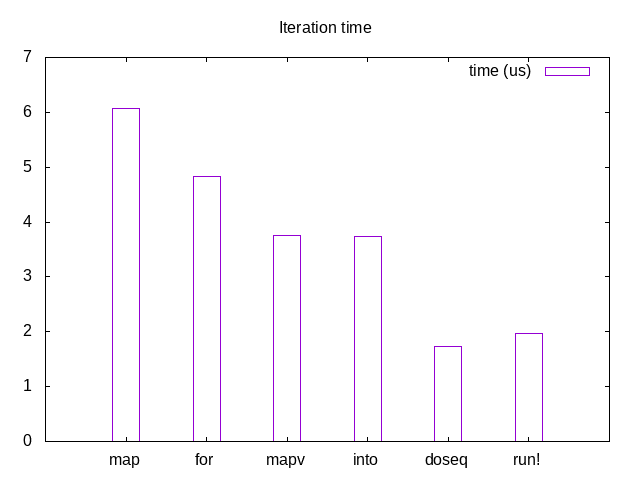

Clojure is a highly practical language. It's dynamically typed, yet immutable, functional, and lazy by default. Unlike strongly typed functional languages, it has no formal system for handling side effects, making them easy to perform on one hand, but also easy to get wrong by mixing up Clojure's idioms.
For programmers coming in from other languages or not used to lazy evaluation, Clojure's idioms can come off as unnatural or confusing.
This becomes doubly clear when dealing with mapping side effects over collections.
This is an attempt to clear up some of the confusion, point out code smells, and suggest alternatives.
It was initially inspired by this post, then questions and discussions with colleagues.
doall Smells Bad
doall is a macro which realizes lazy sequences. It's not uncommon to
see an inexperience developer use it to forcefully realize a sequence
of side effect results, for example:
(doall (map api-call! coll))
or
(doall (for [x xs] (api-call x)))
This isn't meant to be a criticism, but an attempt to bring attention to an incongruity, so hopefully no one takes it harshly:
There is no place for
doallin production code
Why?
Because we either:
doall redundant (and consuming more
memory)When we create lazy collections and pass them between threads, we lose control over the execution context. We might have allocated a lot of threads on which to do the computation, but since we passed the collection to another thread, it will be executed there.
In a scenario where many threads pass collections to one, we may accidentally create a bottleneck and under utilize the allocated threads, an all-in-all unfavorable condition.
The risk is even greater when creating a sequence of the results of a side effectful computation.
I'll have to go deeper into this in the future.
There are several paths towards the same solution, but first we need to understand not all solutions are the same. What differentiates them the most is whether we need to retain the results of computation.
mapvintoreducetransducerun!doseqloopLet's take a look at each option and see what it's good for and how do use it idiomatically:
The simplest option is to throw out every usage of (doall (map
...)) for mapv and call it a day. mapv is eager and will return
a vector with all the results:
(mapv api-call! coll)
Since mapv is just built on top of reduce, feel free to use
reduce directly. It gives you slightly better control, but at a
cost, as mapv uses a transient collection, thus it performs better.
The best of both worlds, but requiring careful usage, is into.
Transducers were introduced in Clojure 1.7 and are the
greatest thing since sliced bread.
So be careful and make sure you use the transducing API:
(into [] (map api-call!) coll)
And not:
;;; Seriously, avoid doing this (into [] (map api-call! coll))
into also uses transient collections, so that's another win.
Equivalently, you can use transduce to the same effect:
(transduce (map api-call!) conj! (transient []) coll)
For the simplest case, instead of using map, use run!
(run! api-call! coll)
run! returns nil and runs the provided function over the
collection immediately.
If you require a more verbose API, doseq is a rich alternative. its
syntax is equivalent to for's but it returns nothing:
(doseq [x coll] (api-call! x))
Just to make sure, let's compare the performance of the various methods. Feel free to skip this segment if you're not interested in the performance differences.
(require '[criterium.core :as cc]) (def xs (vec (range 100))) (defn f [x] (* x x)) (def xf (map f)) ;;; The bad way (cc/bench (doall (map f xs))) (cc/bench (doall (for [x xs] (f x)))) ;;; Retaining results (cc/bench (mapv f xs)) (cc/bench (into [] xf xs)) ;;; Discarding results (cc/bench (doseq [x xs] (f x))) (cc/bench (run! f xs))
| Method | time (us) |
|---|---|
| map | 6.076866 |
| for | 4.829359 |
| mapv | 3.762177 |
| into | 3.737071 |
| doseq | 1.736715 |
| run! | 1.976677 |

Do use:
mapv: instead of map(into init (map f) xs): instead of map.reducetransducerun!: instead of mapdoseq: instead of forAvoid:
map for side effects. It gives you chunked laziness, which makes
no sense for side effects.doall. Your code smells. It's telling you it wants to be something
else.(into init (map f xs)): It creates an intermediate lazy sequence.
About twice as slow as the transducing variant.Unmentioned:
pmap: pmap is unsuitable for the same reasons as map and one
more: you have no control over its concurrency, which is very
important when performing side effects. You don't want to overwhelm
a remote resource. I'll address this problem in another post, but
for now, avoid.Your code will be more idiomatic and perform better.
Happy hacking.